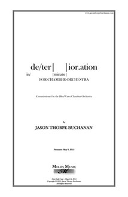

VIEW SCORE:
ABOUT THE WORK:
-
Year Composed:
2015 -
Instrumentation:
2.2.2.1-1.2.0.0-Timp+1 Perc-6.5.4.3.2, 2 flutes, 2 oboes, clarinet, bass clarinet, bassoon, horn, trumpet, timpani, percussion, 1st violins, 2nd violins, violas, cellos, and contrabass -
Dedication:
-
Awards:
-
Purchasing information:
-
Contact:
-
Share:
PROGRAM NOTES:
de/ter| |ior.ation was commissioned by the Blue Water Chamber Orchestra and written in early March of 2015. The work is closely tied to my multimedia opera in-progress Hunger, which explores themes of psychological decay, irrationality, and self-destruction through the fragmentation of concise musical objects, gestures, text, and video, as well as the obfuscation of semantic content in regard to speech and the human voice. In de/ter | |ior.ation, these themes are manifest in the character of the musical materials themselves, navigating a spectrum between density or saturation and fragility. I imagine this work almost as an estranged overture to the multimedia opera - it exists as a separate entity with its own materials and identity, but they remain inextricably entwined. The music gradually unravels as a pulsation in the strings slowly infects the rest of the orchestra. This infection causes the ensemble to swell and burst, giving way to delicate timbral and microtonal fluctuations in the lower strings and an entirely disparate sonic territory. In my recent work, I am drawn to instability, abrasion, and chaos, visual/aural dissonances between a sound and its source, and the pursuit of greater variability through controlled aleatory and elastic time (i.e. simultaneities rather than synchronization) - notation that influences or prescribes behavior rather than singular musical events.
As suggested by the subtitle, in/ |minate|, this new territory is increasingly in/de/ter|minate| and the materials are designed in such a way to provide greater freedom to the performers and opportunities for extreme virtuosity (or anti-virtuosity), exploring the in/ter|ior of the sounds themselves as an analogue for the human experience as musical events drift between temporal synchronicity and causality. In contrast to much of my recent work, I have found myself imagining sparser textures and softer sounds that delicately reveal the relationships between individual layers, parameters, or individual sonic events, and am intrigued by the dialogue that takes place as these layers generate a composite. Each instrument is broken down, quite literally, as the work gently reaches toward nothingness, fading away to ter|minate in complete silence.
I feel that the exploratory nature of art necessitates instability and fluctuation as opposed to stasis. Above all else, my goal is to try new things; not for their own sake, but for the sake of changing my own perspective and discovering beauty in sound objects and processes that are unfamiliar to me. With each piece, I believe that it is absolutely necessary to challenge not only my own technical faculties and their limitations, but to entirely reassess what I believe in both aesthetically and ideologically. The purpose, and value of art should always be in question; what does it mean for a piece of art to be ‘good’ or for a piece of music to be ‘bad’? In challenging my own preconceptions, I hope that at least some sliver of this reassessment process will also transfer to each individual that experiences the work, in turn questioning their own values, and hopefully finding something that they can recognize as being ‘beautiful’ (perhaps I am an optimist). The timbral attributes of each instrument informs my process as much as any conceptual device, extra-musical narrative, or ideological motivation, and are absolutely integral to the work. The relationships between the sounds themselves provide the focal point for the work rather than purely conceptual or theoretical schema.
de/ter| |ior.ation(2015)
in/ |minate|
for the Blue Water Chamber Orchestra
2.2.2.1-1.2.0.0-Timp+1-6.5.4.3.2
Commissioned by the Blue Water Chamber Orchestra as winner of Iron Composer 2014
World Premiere: Cleveland, OH - May 9, 2015
Performances of de/ter| |ior.ation

Cleveland, OH